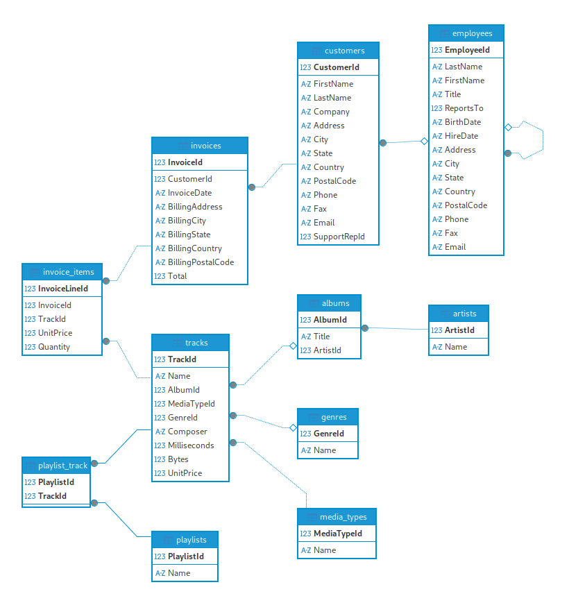

Testing SQLite on a Large Dataset
To build a large database, the sample Chinook database from the SQLite tutorial was used.

The customers table was constantly filled with relatively large rows, until the table has reached 1115397 rows and the DB size has grown to 80_106_637_312 bytes.
The first name and last name are generated as a string concatenation: {id}customer_name{id} and {id}customer_last_name{id}, so that all names are unique.
The 80GiB of data is not possible to process within 40B operations, hence this test shows if SQLite is able to efficiently look for data and only load the necessary pages into the heap memory.
Benchmarks
| Test | Cycles cost (first run) | Cycles cost (second run) |
|---|---|---|
Count elements on the first call: SELECT COUNT(*) FROM customers | 12392402159 | 6205886 |
Customer search by row ID: SELECT firstname, lastname, email WHERE customer_id=900000 | 36316014 | 84516 |
Select by the indexed field first name by the exact match: SELECT firstname, lastname, email FROM customers WHERE firstname = "2912169customer_name2912169" | 33252345 | 62988 |
Select by first name, that does not exist: SELECT firstname, lastname, email FROM customers WHERE firstname = "1" | 30067131 | 60316 |
Customer search by row ID: SELECT firstname, lastname, email FROM customers WHERE customerid>900000 and customerid<900050 | 63839343 | 1821716 |
Customer count depending on the first name: SELECT count(*) FROM customers WHERE firstname>="1" and firstname<"2" | 6498875034 | 254846762 |
Select a person that doesn't exist using LIKE: SELECT firstname, lastname, email FROM customers WHERE firstname LIKE "a%" | Failed | |
Select a person using OFFSET: SELECT firstname, lastname, email FROM customers WHERE firstname LIKE "a%" | Failed |
Note: Both failing queries require full table scan, and SQLite is not able to process that amount within estimated time, you can check if a query is going for a full scan by prepending EXPLAIN QUERY PLAN to your query:
EXPLAIN QUERY PLAN SELECT firstname, lastname, email FROM customers LIMIT 5 OFFSET 900000
Reproducing the Benchmarks
Check out the Benchmark repository ic-chinook-base if you wish to repeat or examine the experiment.